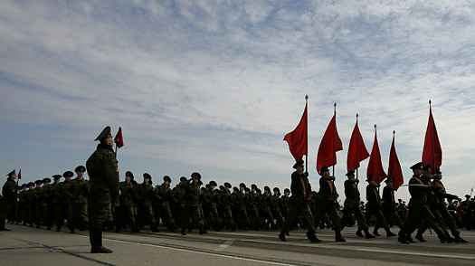

Az elmúlt két hétben Oroszország-szerte minden üzlet kirakatában a második világháborús győzelmet ünneplő plakátok jelentek meg. Mindegyiken büszkén virít a
Május 9. felirat és a győztesek fekete-narancs sávos szalagja. Vörös zászlókkal borítottak minden lakóházat a moszkvai katonai parádé útvonalán. Az ország szokásos győzelmi napi ünnepségei előtt pedig a Kreml újabb intézkedést jelentett be, amely Oroszország hazafias kurzusát hivatott erősíteni: rövidesen törvényt hoznak, amely bűncselekménnyé nyilvánítja annak tagadását, hogy a Szovjetunió megnyerte volna a második világháborút, illetve az olyan állításokat, hogy a szovjet hadsereg helytelen taktikát alkalmazott volna a hadszíntéren, vagy nem szabadította fel Kelet-Európát.

Orosz katonák menetelnek a győzelmi napi parádé próbáján Alabinóban, Moszkva közelében
"Meggyőződésem, hogy a Dumának kötelessége olyan törvényt hozni, amely bűncselekménnyé nyilvánítja a második világháborús szovjet győzelem tagadását" - mondta Szergej Sojgu, a nagy hatalmú Vészhelyzetek Minisztériuma vezetője, Putyin Egyesült Oroszország Pártjának alelnöke és vezető tanácsának elnöke háborús veteránok előtt tartott ünnepi beszédében Volgográd (korábban Sztálingrád) városában, mint azt az orosz RIA Novosztyi hírügynökség jelentette.
Sojgu kijelentése azután hangzott el, hogy az orosz NTV televíziós csatorna egy új dokumentumfilmet mutatott be a rzsevi ütközetről, a szovjet hadsereg által a németek ellen indított offenzíváról 1942 januárja és 1943 márciusa között. A film közfelháborodást váltott ki, különösen a veteránok körében, mert felfedte, hogy a szovjet áldozatok száma jóval magasabb volt, mint korábban a legtöbb orosz hitte - egymillió körül, a németek ötszázezres veszteségével szemben - és rossz színben tüntette fel a szovjet taktikát, bemutatva a német katonák döbbenetét, akik azt tapasztalták, hogy a gyengén kiképzett szovjet csapatokat a veszteségekre való tekintet nélkül hajtották a fegyvereik elé.
Valerij Rjazanszkij, az Egyesült Orosz Duma képviselője és a törvényjavaslat legfőbb támogatója szerdán elmondta, hogy reményei szerint a törvény tervezetét június 22-e, az orosz Emlékezés és Gyász Napja előtt sikerül a Duma elé terjeszteni.
"Azok, akik megpróbálják magyarázni a második világháború kimenetelét, mindent a feje tetejére állítanak, hogy megszállókként mutassák be katonáinkat, akik számos országot felszabadítottak a náci uralom alól. Ezeket az embereket meg kell büntetni" - mondta.
A büntető törvénykönyv legújabb bővítése ellen vétkezők 9 200 dollár bírsággal vagy három év börtönnel lesznek sújthatóak. Ha a törvénysértő személy kormánytisztviselő, és hivatalával visszaélve sérti meg a törvényt, a bírság akár 15 300 dollár is lehet, öt év szabadságvesztés, és bizonyos állami pozícióktól való végleges eltiltás, mondta Rjazanszkij.
Orwelli fordulattal a törvény kiagyalói, akik a javaslatot "a nácizmus rehabilitációja elleni törvénynek" nevezik, azt mondják, jogszabálytervüket az Ausztriában, Németországban, Belgiumban és Franciaországban létező holokauszt-tagadó törvényről mintázták. De mint a kritikusok rámutattak, a holokauszt-tagadást tiltó törvény a zsidók és más, a nácik és csatlósaik által tömegesen lemészárolt népek emlékezetét hivatott megvédeni. Oroszország új törvénye ezzel szemben azt fogja megakadályozni, hogy bárki felülvizsgálja Oroszország történelmének egy fehér foltokkal teli területét, amely tele van a szovjet kormány terjesztette propagandával és féligazságokkal. Ezek úgy kerültek a mai történelemkönyvekbe, hogy senki sem vette a fáradságot, hogy túl részletesen foglalkozzon a múlt feltárásával.
Az orosz liberálisok attól tartanak, hogy a törvény büntetni fogja és elhallgattatja a pontos történelmi elemzéseket, és megszilárdítja a kormány uralmát a múlt felett. De a törvény valódi célja az, hogy a Kremlnek újabb retorikai fegyver kerüljön a kezébe, amivel a volt szovjet köztársaságokat és a keleti blokk országait támadhatja, ha úgy ítéli meg, hogy azok túlságosan a Nyugathoz húznak. A legjobb példa erre az a közelmúltbeli eset, amely még mindig hullámokat kelt Oroszországban, a 2007-es észt döntés, amelynek értelmében eltávolították a Vörös Hadsereg katonájának szobrát egy központi térről Tallinnban. Ez az eset zavargásokat és nemzetközi feszültséget okozott.
"Ha a nácizmus rehabilitációja elleni törvényt elfogadják, a szovjet győzelmet tagadó államok vezetői nem utazhatnak majd Oroszországba, mert letartóztathatják őket. Egyes városok polgármestereinek pedig kétszer is meg kell gondolniuk, lebontsanak-e bizonyos emlékműveket" - jelentette ki Sojgu a RIA Novosztyi jelentése szerint.
A Közvéleménykutató Központ szerdai kutatása szerint, amelyben 1600 orosz állampolgárt kérdeztek meg, az oroszok 60%-a egyetért, hogy nyilvánítsák bűncselekménynek, ha valaki tagadja, hogy a szovjetek nyerték meg a háborút, 77%-uk pedig egyetért azzal, hogy a Szovjetunió felszabadította Kelet-Európát. Szombaton több ezer katona, több mint száz harckocsi, csapatszállítók és ballisztikusrakéta-indító járművek vonulnak fel a Vörös téren, Moszkva központjában, és több, mint hetven repülőgép és helikopter száll majd az égen. De miközben az oroszok a nácik felett aratott győzelmet ünneplik, a szólásszabadság legyőzését is köszönthetik.
Az eredeti cikk a Time Magazine 2009 májusi, európai kiadásában jelent meg.
Eredeti cím: John Wendle: Russia Moves to Ban Criticism on WWII Win
A magyar fordítás a Bombagyár közösségi blogról származik.